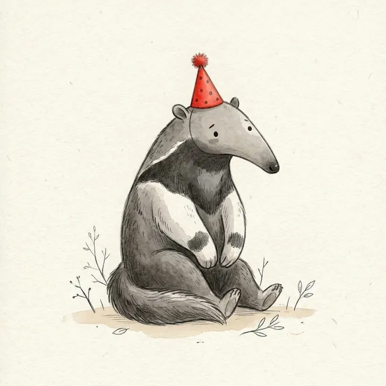
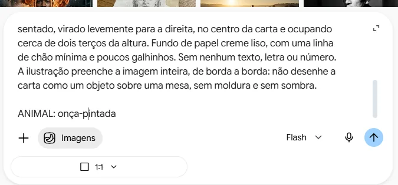
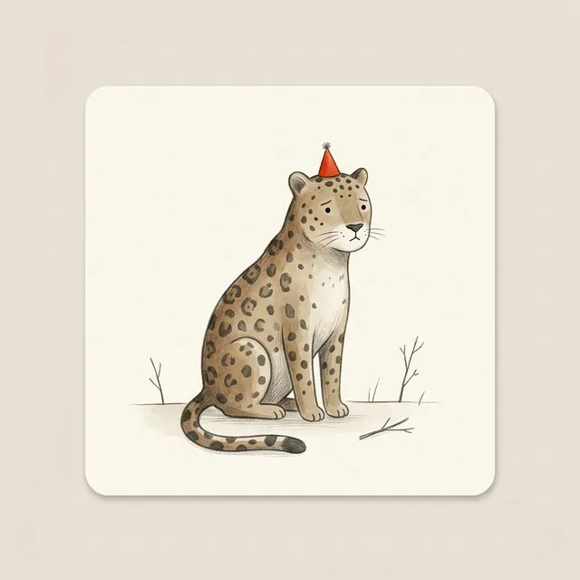
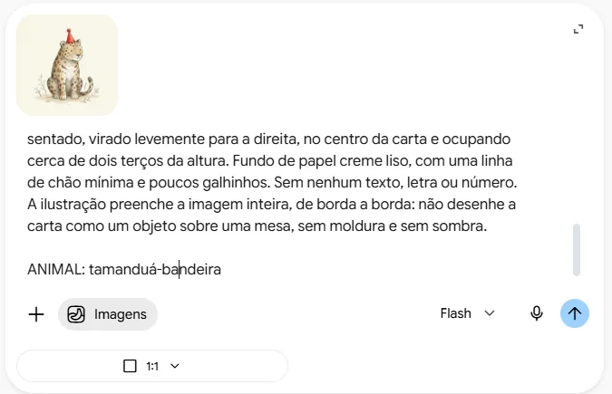
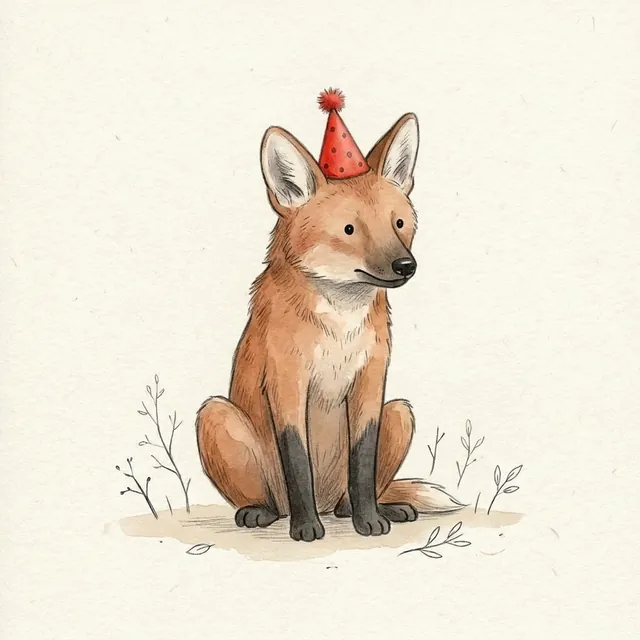
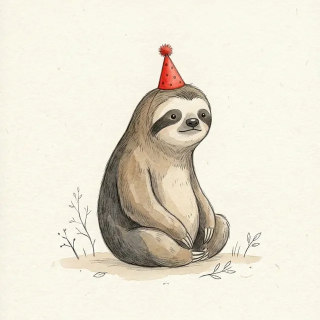

Criar imagens no mesmo padrão
Monte um kit de instruções e gere uma série de imagens que combinam entre si. No exemplo, as cartas de um jogo da memória de animais do Brasil
- ESTILOaquarela, paleta terrosa, chapéu vermelho
- CARTAquadrada, animal sentado, no centro
- ANIMALtamanduá-bandeira




Entenda o desafio
- Num jogo da memória, as cartas precisam parecer do mesmo baralho.
- Pedidas uma a uma, as imagens saem cada uma de um jeito, como as dos tutoriais anteriores.
- A solução: escrever o padrão uma vez e repetir em todos os pedidos. Vamos chamar isso de kit de padrão.
Crie uma carta de jogo da memória seguindo este padrão. ESTILO: Ilustração de livro infantil minimalista. Corpo arredondado e simples, pontinhos como olhos, expressão tranquila e um pouco melancólica. Textura de aquarela com detalhes a lápis grafite. Paleta de cores terrosas (marrom, bege, cinza-escuro), com um único destaque de cor vibrante: um pequeno chapéu de festa vermelho na cabeça do animal. Luz suave, sem sombras fortes. CARTA: Formato quadrado. O animal aparece sozinho, de corpo inteiro, sentado, virado levemente para a direita, no centro da carta e ocupando cerca de dois terços da altura. Fundo de papel creme liso, com uma linha de chão mínima e poucos galhinhos. Sem nenhum texto, letra ou número. A ilustração preenche a imagem inteira, de borda a borda: não desenhe a carta como um objeto sobre uma mesa, sem moldura e sem sombra. ANIMAL: onça-pintada
Monte o kit
- O kit tem três partes: o estilo (o prompt do tutorial anterior), as regras da carta e o animal.
- As regras dizem o que precisa se repetir: formato, pose, posição, tamanho e fundo.
- Um detalhe aparece em todas as cartas: o chapéu vermelho. Ele dá unidade ao baralho.
- Guarde o kit num documento do Drive. Para cada carta nova, só a última linha muda.

Gere a primeira carta
- Abra uma conversa nova e ative Criar imagem, pelo +.
- Em Proporção, escolha 1:1: carta de jogo da memória é quadrada.
- Cole o kit e envie.

Confira antes de aprovar
- A primeira carta veio desenhada como um objeto, com borda bege e sombra. Não serve para imprimir.
- Pedimos o ajuste na conversa, e não funcionou.
- A solução foi levar a correção para o kit e começar uma conversa nova. Por isso o kit do passo 2 diz "de borda a borda".
- A carta aprovada vira a carta-modelo do baralho. Baixe e guarde.

Peça a próxima carta
- Abra uma conversa nova, de novo com Criar imagem e 1:1.
- Anexe a carta-modelo pelo +, cole o kit e troque só o animal.
- Na primeira linha do kit, acrescente: "Use a carta anexada como modelo: mesmo traço, mesmas cores, mesmo fundo, mesmo enquadramento e o animal no mesmo tamanho."
- Por que conversa nova? Para mostrar que quem guarda o padrão é o kit, e não a memória da conversa.
Compare as duas
- Mesmo chapéu, mesmo chão, mesmos galhinhos, mesmo tamanho.
- Só mudou o animal, que é o que precisava mudar.


Complete o baralho
- Repetimos o pedido para arara-azul, capivara, lobo-guará e bicho-preguiça.
- Cada carta levou menos de um minuto.
- Repare na arara: o azul vivo fugiu da paleta terrosa. Aceitar ou corrigir é decisão sua. No próximo tutorial, vamos ajustá-la.
Jogue
- Interativo: vire duas cartas por vez e encontre os pares.
- Para imprimir, baixe as cartas, coloque duas cópias de cada numa página do Docs e imprima em papel mais grosso.
- Você criou um material com identidade visual própria, e o kit serve para muitos outros.
- Confira cada carta antes de imprimir: patas, olhos e detalhes do animal.